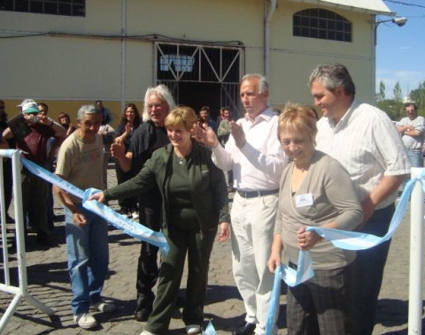

IV ENCUENTRO "PALABRAS EN EL MUNDO"
I ENUENTRO DE PINTORES PAISAJISTAS
PUERTO GENERAL SAN MARTÍN (SANTA FÉ)
Octubre 2009
ENTRE HADAS Y DUENDES.
CADA ENCUENTRO EMPIEZA Y TERMINA.
AL LLEGAR A SU FIN, DEJA UN DULCE
SABOR A NÉCTAR
EN MI CORAZÓN MEZCLADAS CON AROMAS
DE JAZMINES Y AZAHARES.
CADA UNO DE LOS DUENDES
Y HADAS QUE NOS VISITAN
ME DEJAN UNA NUEVA ENSEÑANZA,
UNA NUEVA EXPERIENCIA Y
ME HACEN CRECER.
HACEN QUE MIS LETRAS VUELEN ,
ALTO MUY ALTO, Y CADA UNA
DE ELLAS SEAN EL ESTRIBILLO
DE LA PALABRA AMOR ,PARA
SEGUIR TRANSITANDO
ESTE HERMOSO MUNDO, DONDE EL POETA,
EL PINTOR,EL CANTANTE SE TOMAN DE LA
MANO Y MEZCLAN LOS COLORES
MÁS BELLOS DEL FIRMAMENTO.
UNA NUEVA PROPUESTA,
UNA NUEVA RAZÓN
PARA ALEGRAR MI CORAZÓN
Y ASI SIGO UN TRAYECTO QUE ME PROPUSE
HACE MUCHOS AÑOS ATRÁS.
HACER VIBRAR MIS RAÍCES,
QUE MI QUERIDO PUERTO FIGURE EN
EL MAPA ,QUE SEA RECONOCIDO
Y YO COMO PROTAGONISTA SEA
EL ORGULLO DE QUIENES DEPOSITARON
UN DÍA SU CONFIANZA .
ELSA PATTERER |
 |